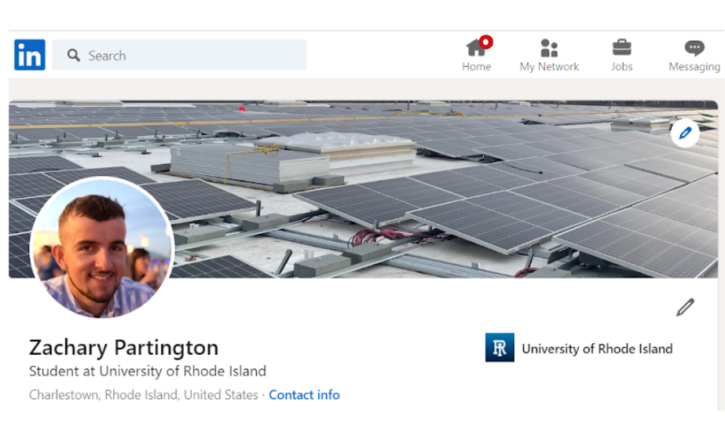
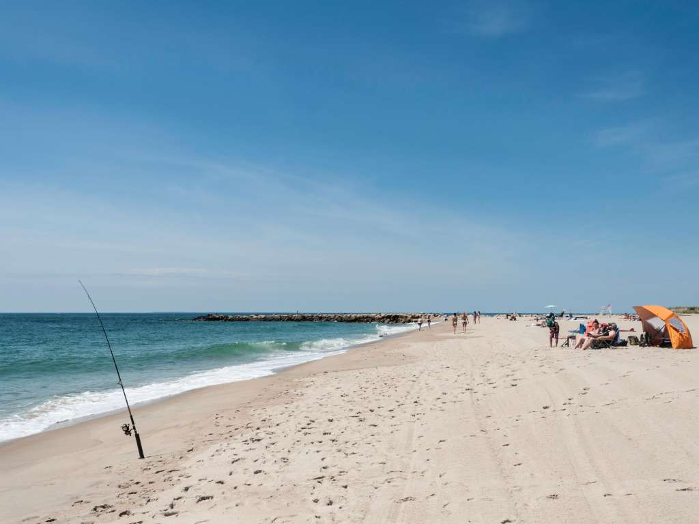

Hi! Thanks for coming to my webpage. My name is Zack Partington, (my photo is shown above on the website's banner)
I'm a computer science major at The University of Rhode Island
Chcek out my professional page on LinkedIn!


I am from Charlestown Rhode Island, and grew up spending lots of time on the water at the local "East" Beach. (pictured above)
My top three favorite hobbies include
1. Playing Basketball
2. Wokring out
3. Programming
Thank you for visiting my page!